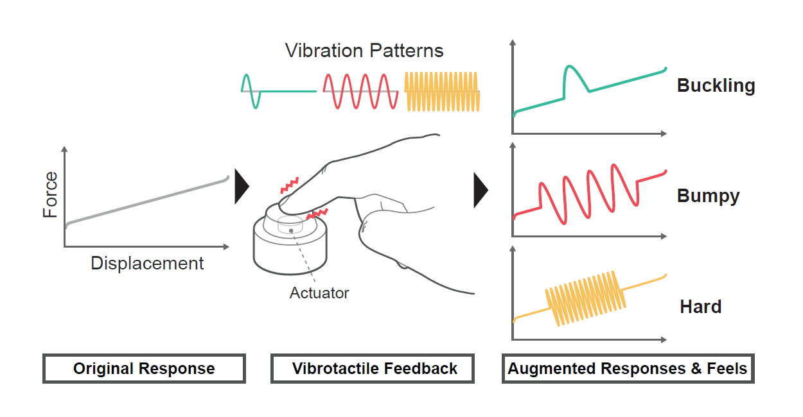
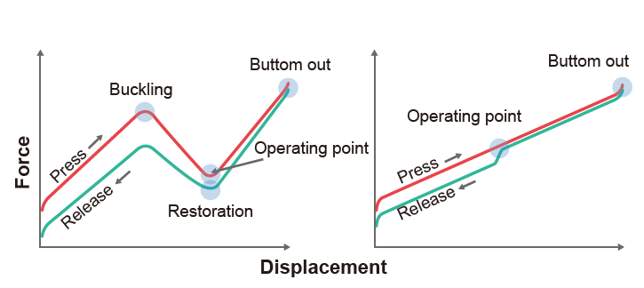
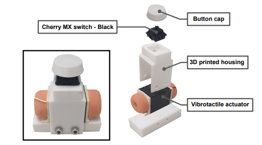
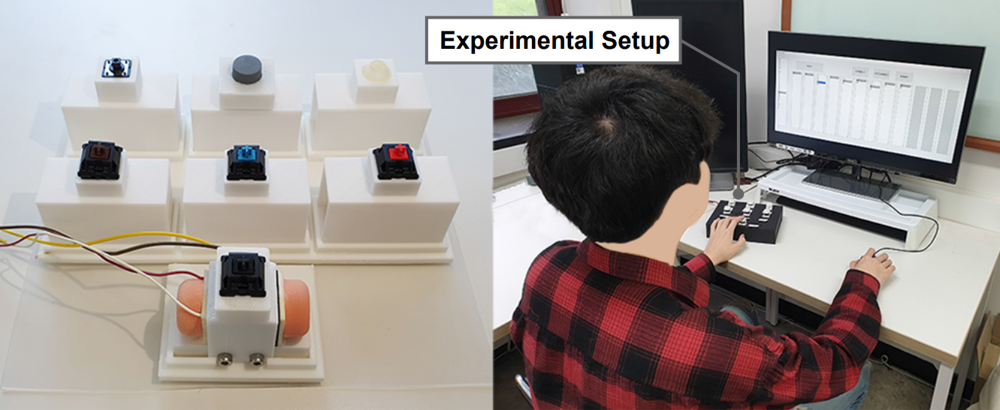

Augmenting Physical Buttons
Programmable feels with vibrotactile feedback

Hardware prototyping, sensing system design, user study design and analysis
Collaborator: Chaeyong park, Seungjae Oh
Advisor: Seungmoon Choi
Chaeyong Park, Jinhyuk Yoon, Seungjae Oh, and Seungmoon Choi. Augmenting Physical Buttons with Vibrotactile Feedback for Programmable Feels. In Proceedings of the ACM Symposium on User Interface Software and Technology (UIST), pp. 924-937, October 20-23, 2020 (Acceptance rate 21.6%).
Physical buttons give clear haptic feedback when pressed and released, but the feel never changes. Force actuators can make a button produce any click sensation, but at a substantial cost.

A cheaper alternative is to add a simple vibration actuator to a physical button. When pressed, the augmented button overlays a vibration on the button's original kinesthetic response, following the framework of haptic augmented reality.

We explored the design space by varying vibration frequency, amplitude, duration, and envelope. We estimated a perceptual space for 7 physical buttons and 40 augmented buttons to visualize their perceptual structure. We also rated their sensations against adjectives and mapped the results into that space to find meaningful perceptual dimensions.

The results show the benefits and limitations of vibration-augmented physical buttons, with a focus on how they feel.